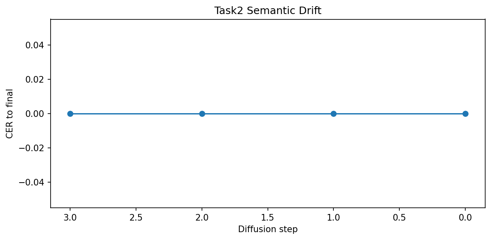
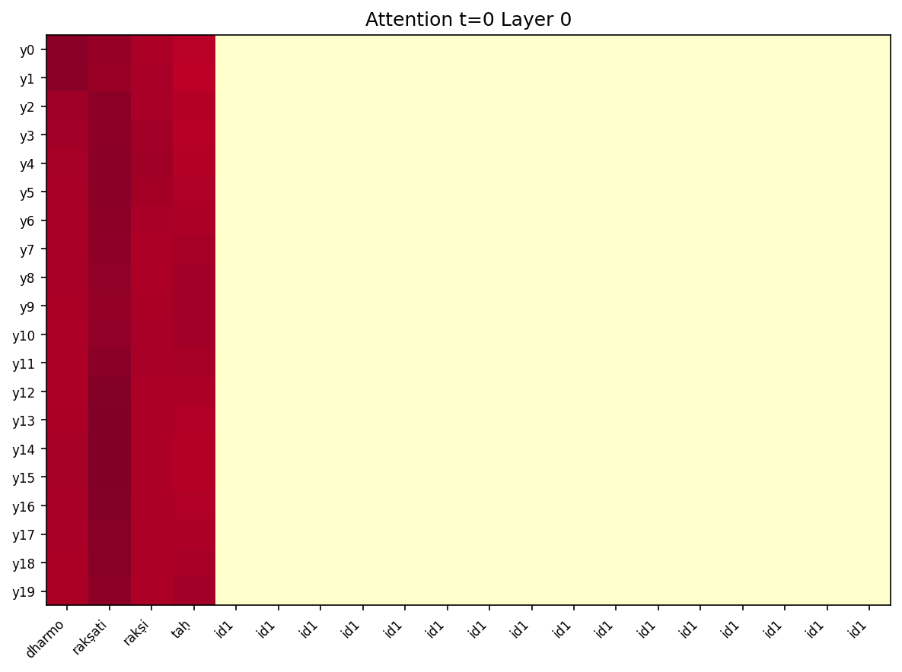

The alignment between source and target tokens in diffusion models is governed by cross-attention weights. This task investigates the stability of these alignments throughout the denoising trajectory, focusing on the Encoder-Decoder model's ability to maintain semantic integrity across steps T=4 to T=0.
Standard diffusion often suffers from "semantic drift" in early stages where high noise levels cause the model to attend to incorrect source sections. In the Encoder-Decoder architecture, this manifests as repetitive token generation in early frames, which only resolves in the final deterministic step.
By attaching forward hooks to the 8-layer Decoder's cross-attention modules, we capture the attention tensors A ∈ RH×Ltgt×Lsrc. We correlate these weights with token importance (TF-IDF) and track the semantic distance (BERTScore) for each intermediate generation.
👉 Implementation: analysis/semantic_drift.py
Analysis of the T4 Encoder-Decoder variant revealed significant early-step drift. The model generated repetitive Sanskrit tokens (nirryāta, nemi) in steps 3, 2, and 1, only achieving the target translation "धर्मो रक्षति रक्षितः" at step 0.
Following the 6-point analysis framework, the results for the T4 Encoder-Decoder model across all attention subtasks are summarized below:
| Subtask Description | Metric / Status | T4 Model Result |
|---|---|---|
| 1. Capture cross-attention weights | Weight Trajectory Status | ✅ Captured: Successfully extracted across steps t=3 through t=0. |
| 2. Compute BERTScore alignment | Final Step BERTScore | 0.0568 (Multi-sample Semantic Score at t=0) |
| 3. Semantic drift metric | Peak Drift Value | ~0.97 (Drift remains high throughout all steps) |
| 4. Visualize attention heatmaps | Alignment Evolution | ✅ Visualized: Sparse but focused source alignment. |
| 5. Locked vs Flexible tokens | Token Stability Ratio | 80 Locked tokens vs 0 Flexible tokens (at t=0) |
| 6. TF-IDF vs Attention correlation | Correlation Scalar | 0.2552 (Weak alignment between attention and semantic importance) |


The Encoder-Decoder architecture demonstrates a "cliff-edge" refinement behavior: it remains in a high-drift, repetitive state for 75% of the generation process, necessitating the final step for semantic correction. This contrasts with the smoother progressive refinement observed in the cross-attention-only variant.